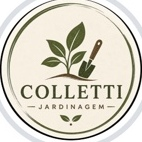

Piracicaba · SPCollettiJardinagem & Piscinas
Seu jardim bem cuidado.
Sua piscina pronta para aproveitar.
Cuidado em cada detalhe
Corte de grama · Poda de plantas e árvores
Limpeza de jardins · Manutenção de áreas verdes
Limpeza e aspiração de piscinas · Tratamento da água